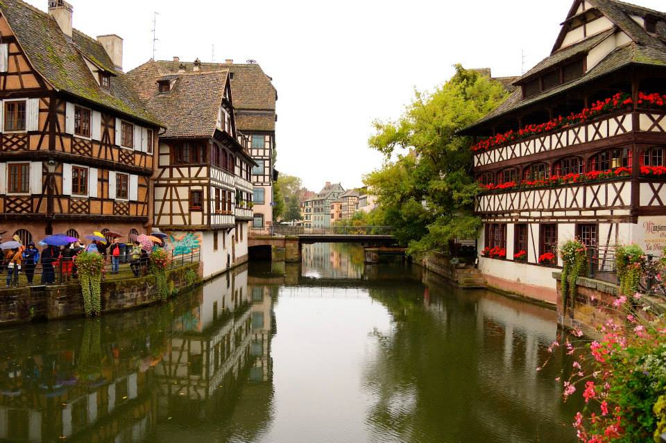
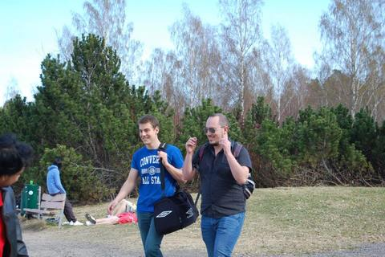
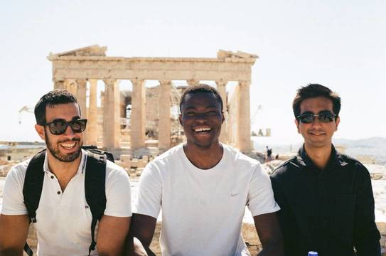
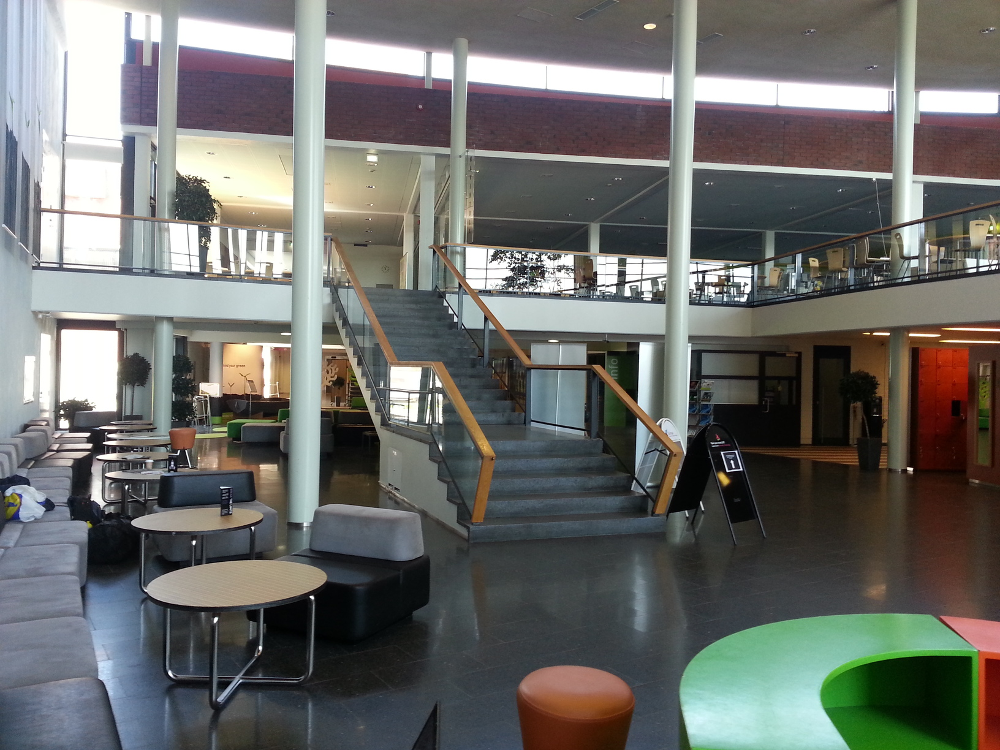
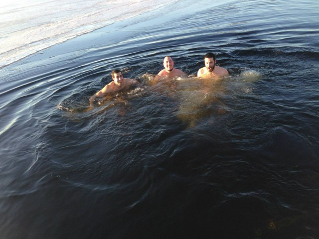
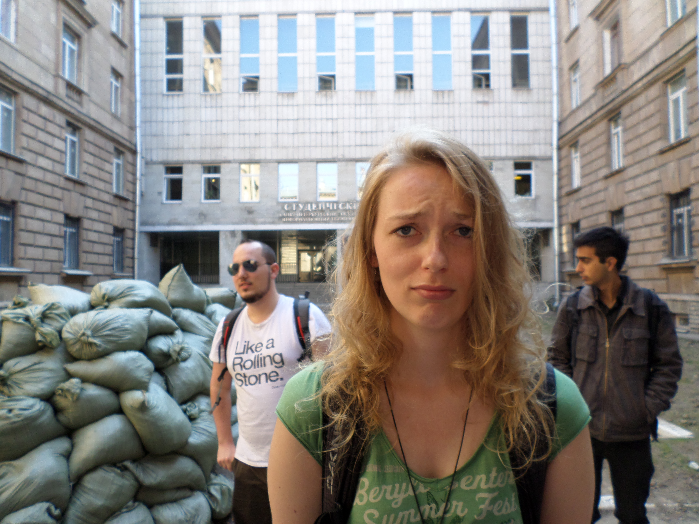
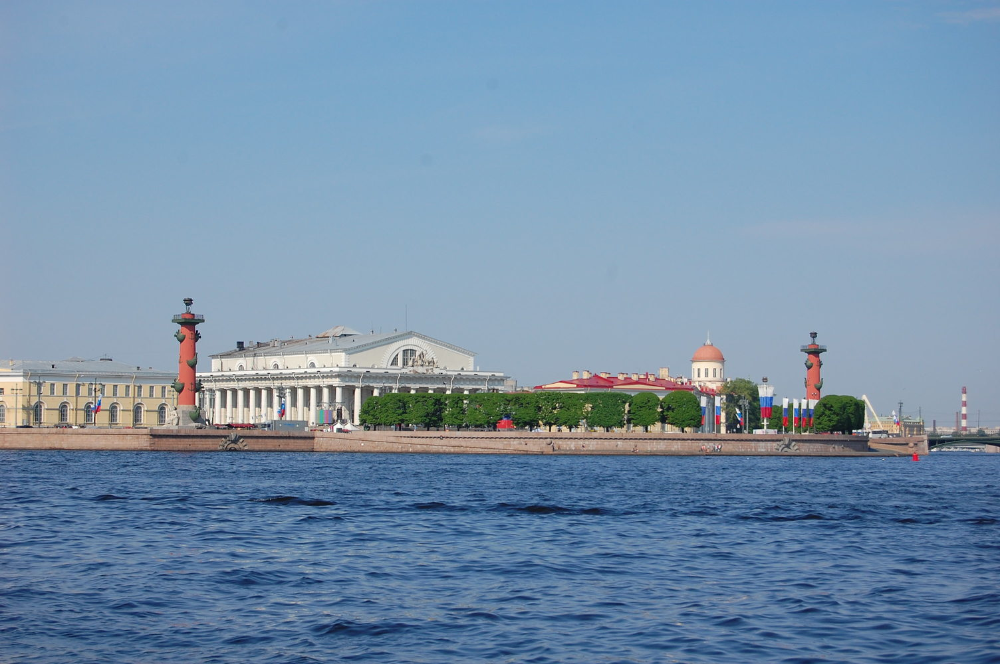
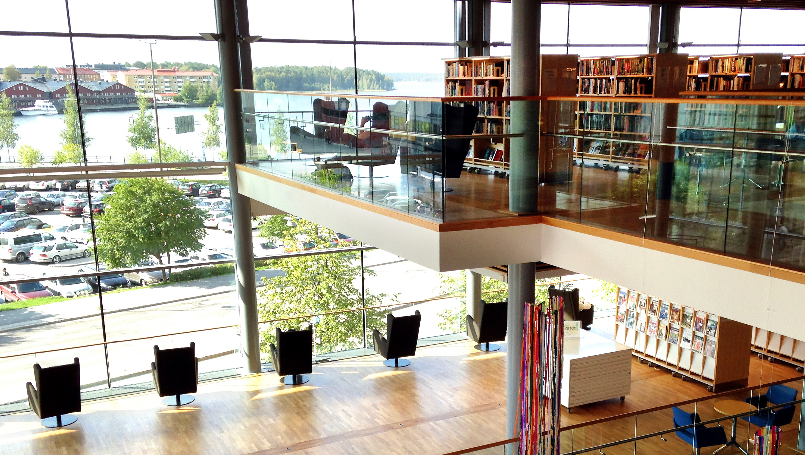
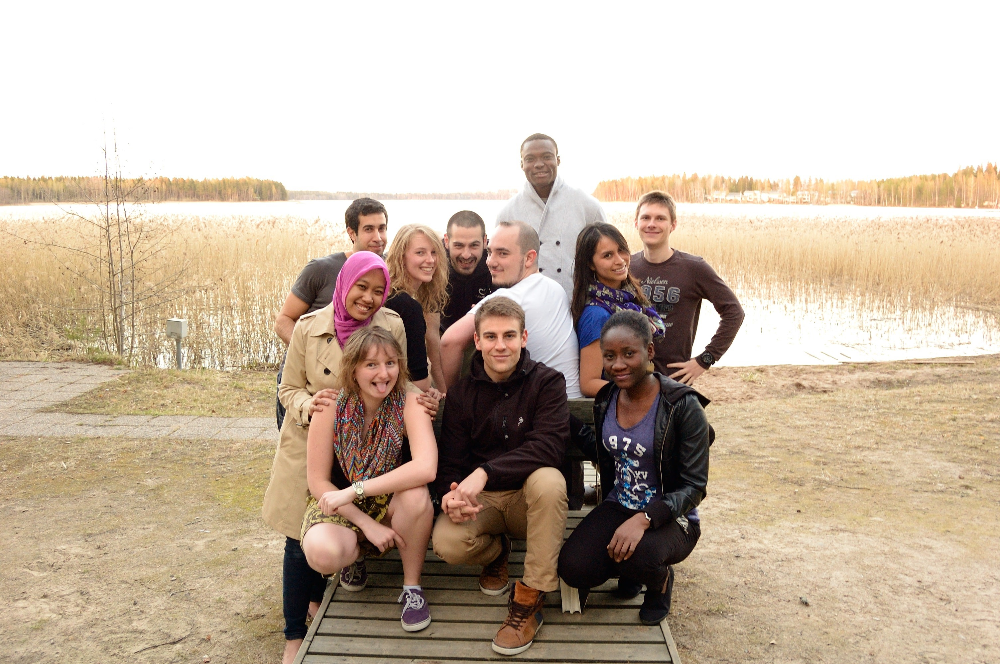

, No 1
Studying in four different countries
l0.45
Author’s thoughts
Before going abroad, to pursue my master’s degree, I was living in little paradise called Cyprus. A sandy island in the Mediterranean sea surrounded by three continents, offering strong sun light most of the year, amazing beaches, kind and friendly people with great hospitality, chill and easy going life-style. However, the world was much bigger and attractive, in many and different ways, than I initially thought. Once I visited four different countries, in the context of my studies, I came to realise that I have only read a chapter of this book called “Our World”. I never thought before that: travelling; meeting new people; learning new things; accepting facts and mentalities from different cultures; will be an exciting and a large part of my daily life. I have met people who gained my utmost trust and respect, and no matter how far away they are now they are still close and always in my thoughts. And one thing I know for sure, I would never have been the person that I am today if I hadn’t take the big leap and exit my comfort zone.
— Stefanos Georgiou
3
What was I thinking?
by Stefanos Georgiou
Growing in a small island (i.e. Cyprus), I had a limited knowledge regarding the vast experience, new ideas, and cultural benefits I could assimilate while travelling abroad. Being in the last year of my under graduate studies, at the University of Cyprus, I had an aim of doing my post graduate degree in United Kingdom or any other English speaking country. In addition, alongside with the University, I had full time barman responsibilities at Starbucks cafeteria to collect money for my studies. While being in a family of six, with four siblings, I believed it was important to get funds by any means to reduce the burden on my parents for doing my post graduate degree. The opportunity was given, to do my studies, while being eligible and qualified to receive a Erasmus Mundus scholarship, after I applied for perccom (PERvasive Computing and COMmunications for sustainable development) program. A fact that made me super happy and left a huge smile on my face for many days.
The above-mentioned master program offered studies with the subject of GreenIT and sustainable development with the opportunity of studying in four different counties (France, Finland, Russia, and Sweden) for 18 student for the duration of two years. Moreover, it was a unique chance to meet people from different cultures and backgrounds since it was an international program and one of its purpose was to bring together students from various countries. However, a bit skeptical about this choice, as a person who never lived abroad and who do not even know how to cook, I took the decision for exiting my comfort zone and in September of 2013 I started my studies abroad. But who would know that I will end-up addicted in living abroad and having the travelling aspect as part of my life?
During these two years of my post graduate studies, I acquired knowledge and experience that I would never had if I only stayed in a tiny island. My purpose is to share and motivate young people to get out of their comfort zones, travel a lot without thinking too much, meet a bunch of crazy people with no limits, and never forget to take your smile whenever you go or whatever the situation it is.
First stop: France
France, the country of great wines, delicious cheese, funny English accent, and kind people was the first stop of my studies. More specifically, the city Nancy (located in the Northern France) offered its hospitality for the 18 perccom students. The dream team composed from three French, two Nigerians, two Indians, two Bangladeshi, two Indonesians, a German, a Peruvian, a Ukrainian, a Romanian, a Vietnamese, and a Cypriot/Hungarian (myself).

City of Strasbourg
I arrived in Nancy late in the evening, being exhausted from the trip, sweaty and dirty, and more importantly super hungry! That was my first encounter with Fisayo Caleb Oluwagboye, a guy from Nigeria also a student in my program about the same age as I. A kind, smart, and quite person who is a very dear friend of mine and who later on asked me to become his best man for his wedding. Even now (years after my studies), we regularly speak over Skype, or we try to meet at least once a year. Long story short, he was the first person who cooked for my when I arrived in Nancy during that night once he realised how hungry I was. After that day we where always going out together, he was the person I trusted to speak my mind and the things that were bothering me like relationships, family staff, or studies.
Our studies, in the University of Lorraine, where intense since we had to follow lectures eight hours almost every day. The French education system is build mainly from long hours of lectures and less load on homework. In addition, we had to speak formally with most of the professors compare to the Scandinavian Universities. We received most of the student guidance in the French Universities from our cohorts’ students, Alexandre De Masi, Baptiste Louis, and Dorine Petit. Alexandre was our group’s techno-freak, he was always connected and following every step of different technological advancements, but, mainly in the communications field. Baptiste was our group’s princess, a nick name that everybody liked and used. The nick name was given be me and Dorine while searching for a picture with the “thank you” description and the princess word was also written there. Dorine was our group’s dance addict, she was always willing to help us while staying in France, and she was responsible for writing the perccom’s blog and news. These three were the people who mainly help us to bypass the hard French conversations in different domains. Also, they gave us the first flavour of France while partying and organising social events with them.

Baptiste and Alexandre
During our stay in France, our program organised trips such as visiting winery villages where the French speciality lies. These are amazing places to get tipsy while testing the different variations among the most excellent wines from years of knowledge that France has. The locals tried to help us to understand what are the differences of a good wine and how we should handle it based on its age. For instance, you should be more gently and careful with handling old read wines and less time is required to let it “breathe”. We also learned that the difference of champagne against the other sparkling wines is nothing more than the production place, the region of Champagne. However, with our still immature and youngster nature we where only focus on getting drunk and having fun instead, I still feel lucky that I remember all the above information that I am currently sharing.

I am left, Fisayo mid, and Rohan right
Another great experience that we had in France was the international evening we organised among the perccom students at Alexandre’s apartment. The aim was to bring traditional food and alcoholic drinks from our home countries and let everyone to have a taste from it. We tasted food from approximately eleven various kitchens, the apartment of our host had smells from different spices and food for at least a week. I guess these smells also disturbed Alexandre’s sleep since for some time he look really sleepy, or maybe it was the intense courses from our University with the combination of French professors accent while trying to teach in English. Nevertheless, we extended the night by having some beers at a local pub. As a non-beer drinker, I decided to try one, however, the options were various and all unknown to me. That was the time when one of our fellows, Vlad (Romanian scout guy who was wearing a red characteristic jacket, drinking beers like water, and skilful programmer), told me the fantastic quote that I even use nowadays. “Stefanos, when you don’t know which one to pick just go for the blondes, they are always a good choice”. By thinking of that quote again, I am not aware if he only meant that for beers.
The first semester was quite fruitful for me in both terms of education and life experience since I have done new thing like basic French conversation, activating my apartments fire alarm a couple of times while cooking, building home automation systems for smart houses and so on. After an awesome first semester in France, we packed our stuff and travelled to our next destination, the ice-cold Lappeenranta of Finland.
Second stop: Finland
The country of the thousand lakes and two millions of saunas is Finland. Where people are quite, peaceful, barely speaking to strangers, not making eye contact, and they feel you are inviting their personal space if you stand too close to them. However, when they start drinking alcohol and partying they become open and cheerful.

Lappeenranta University’s entrance
In the beginning of January 2014, Finland welcomed our cohort with snowy days and long nights. In the north, most of countries have long nights during winter times and long days during the summer times. Some common patterns of the Scandinavia countries are: sun is rare and a valuable; prices of alcoholic and cigarettes are high due to taxation; eating in a restaurant is pricey; expensive bus tickets; getting a descend hair cut costs; high education and well structured system; amazing public health service; buses on time; and every single person knew English and with a proper accent.
To reduce some of these aforementioned costs since we had a small scholarship and definitely not one that is enough for Scandinavian countries, we took some necessary steps. For example, we bought a complete hair cut kit and we entrusted out hair to Alexandre—who only had experience in trimming sheep’s fur as one time he said while being tipsy. Worth to say for free hair cut it wasn’t that...bad! For reducing the transportation fees, since I was leaving five kilometres away from the University, I used to walk everyday. Luckily the lake Saimaa, the one I had to pass by to get at the University, got frozen. Therefore, it offered a direct part to the University if someone was crazy enough to risk working on the frozen lake. However, a bit uncomfortable initially—because as a Cypriot I am only experienced on walking on the sand or swimming in sea—I took the big step and started everyday going to the University through the frozen lake. This brave decision of mine reduced the walking time, towards the University, from 30 to 15 minutes.
Walking on a frozen lake to go home
Regarding the Finish education system, is consider to be one of the most successful one. Some key factor to their success is the reduced lecture hours and the increased load on homework. In addition, most of the Finnish students do not study more than eight hours, University’s lectures included as studying hours. They are trying to keep a balance between studies and student life instead of spending endless hours at the University. Also, the Finish Universities are open 24/7 without any guards and student can access different parts of it while using their student cards. Moreover, students can book different classes, meeting rooms, and saunas in the University to organised social events like project meetings or even parties. In our cohort the main organiser of the perccom parties and our ambassador was Vicky Palacin Silva. A crazy Peruvian girl who has unlimited source of energy and patients, great organising skills, and who is always in party mood. Also, no matter what questions we had, Vicky always knew or she could find the answers. Alongside with Vicky you could always find Vlad and Maike; a vegan German girl who I often used to teas with bad meat quotes and jokes, even tho we became great friend but I still teas her.

Jumping in a frozen lake after sauna
Sauna is undoubtedly one of the most serious social events in Finland since business man can close deals there with just a simple handshake. For Finish people giving your word that you will do something is serious. In addition, Finland has five millions of population and two million of saunas. Most to the buildings offer sauna facilities and it is a habit followed by Finns very frequently during the week. We had also adopted this habit and we even tried the most extreme types of after sauna, like jumping in the snow or in a barely frozen lake. If anyone thinks that your body can withstand the cold lake of 2-3 degrees just because you where in the sauna where the temperature is around 80 is mistaken. The experience was freezing of course since we were running immediately back to the sauna after jumping in a cold lake.
During the summer period, in Finland, the days are longer and as an outcome we experienced only four hours of night time. This is usually the perfect period of the year to start social events such as barbecue and parties near lakes until late hours. However, be advised that summer in Finland is not like a regular Mediterraneanise’s country. It can even snow in May!
By the end of the second semester, we had a two weeks of seminars in one of our partners University, the itmo University of Saint-Petersburg. To this end, we packed our luggage for the next adventure by the middle of May in 2014.
Third stop: Russia
“When will we reach the Russian boarders", was my first question, while travelling to Saint-Petersburg by bus, towards our Ukrainian fellow Vitali Poliakov (another techno-freak, that you can align with Alexandre De Masi, combined with the slow eating behaviour, his usual quote “no no stop stop stop", and his unique surprise expression very time he sees something odd). Vitali then took his serious expression and said “You will realise it because your ass will start hurting from the bumpy road", he said. I could not agree more, the bumpy road combined with the strict check-up of passports and languages was our welcome ceremony to Russia.

Maike’s face for our accommodation
During the first day, Saint-Petersburg’s beauty was hidden from us by the cloudy, moody, and rainy weather, a fact quite usual for this city even during summer time. Nevertheless, the combination of the neo-classical architecture, bridges, monuments, theatres, operas, and ballets are giving the city a beautiful, attractive, and cultural view. In addition, the party places, cafeterias, and restaurants, that vary in the city, are providing a comfort and many options for its locals and tourists.

Vasiliovsky island
The expression on Maike’s face (see first picture) about our accommodation was priceless. The dormitory had a lot of sand bags packed in the entrance and high iron gates; which made it look like a war zone. In addition to that, four old Russian ladies were guarding the reception and monitoring every movement in the building. At every wrong action, like coming back at the dormitories late night, they were taking an angry look and start shouting some unknown Russian words to us. However, small daily actions such as smiling and greeting them in their native language contributed in a very friendly behaviour later on.
Our hosting University, itmo, had a research centre at Vasilievsky island next to the State University of Saint-Petersburg, where the current Russian president (Vladimir Putin) graduated. The seminars took place at the above-mentioned research centre, a building that is mainly decorated by marble, a circular stair case, and mosaics that gives a flavour of classical style. Same fact goes for almost all metro stations in the city, they look like museums covered with mosaics and marble pillars.
An interesting event happening in Saint-Petersburg during June are the white nights. The outcome of this event is having day light all time long even during night time. Something that caused me confusion for many days since most of time I could not distinguish if it morning or night time. Sleeping masks or tick curtains are necessary if you end up in Saint-Petersburg on that period of time. The white nights are starting on 11th of June and last until 2nd of July. In addition, during summer time, when the ice in the Neva river is melt (river connected with the Finnish Gulf), the bridges are rising to pave paths for the transport ships. Even tho it happens every year, you could still see many people standing by the river’s embankment to view this event, listen to music played near the bridges by local musicians and to enjoy the moment.

The summer palace, Peterhof
For our Master Thesis, we had to choose a topic of our interest during the first semester. The associated partner for my topic was itmo University of Saint-Petersburg. A choice I believe it was the finest after experiencing for two week in that magical city.
Forth stop: Sweden
Sweden, the country where most of people are blonde with blue eyes, where fika (a coffee break habit) is a mandatory after every lunch, even at fast food places. The country where our perccom team experienced numerous hokey games, Northern Lights very often since our hosting University was located in the north (Lulea), and felt the freezing Swedish cold weather of minus . Also, compared to Finland, Sweden is still very expensive and the student housing is a mess since there are not enough facilities to host all students.
Since Lulea is located in the far north of Sweden, we had often the opportunity to see the Northern Lights. Northern Lights is a beautiful view of the sky and there is a need of certain conditions to experience it. For instance, it shouldn’t be very cold or windy, also it is far more clear and visible when there are no city lights close to it. In this line, many teams are organising the so called “Aurora hunting” where they travel in the North of Sweden, places distant from cities, to experience the full view of the Northern Lights. I had the opportunity to see them a couple of times from my apartment’s balcony. It never stopped to amaze me, every time I was just starring the view with silence and respect towards this world’s wonder.

Cultural centre and library1
Housing in Lulea was hard, since houses are limited for the large amount of students in the city. For the first month, me and a friend of mine, Iqbal Ahmend, we rented a cottage that was ten kilometres outside the city next to a beautiful forest and lake, and had a terrible internet access. Also, the bus schedule was very spare and from time to time we had to wait more than two hours (changing buses) to go from the University to city centre and then back to our cottage. However, after the first month we successfully rented a big and beautiful apartment in the city centre just next to the city’s cultural centre. The cultural centre was a magnificent four storey building that had modern architecture and a whole site was made by glass. This fact offered a beautiful view towards the Gulf of Bothnia from the top floor with a pleasant working environment for the University students. We used to go there regularly to study and discuss different working projects, ideas, plans, and we stayed for hours while enjoying the view.
The Technological University of Lulea’s campus composed from a number of old but beautiful buildings. The whole campus had its own underground tunnel system that was inter-connecting all the University buildings. This was done to help students from moving to different buildings during winter without the need of going outside. Also, in a similar manner to Finland, the University of Lulea offered 24/7 access to its facilities for the students, even in the library. One of our favourite facilities, in the University, was the stuk. A place where many social events were organised and many parties took place. Something very interesting about the parties in stuk, every time a party was finished security personal was sharing anti-hangover pills at the exit. In the begging I didn’t believe that these pills are working. However, I greatly utilise them during my party times in Saint-Petersburg in Russia (I was studying there during the next semester of 2015).

Coding Camp, sleeping in the lab
Apart from partying and spending good time, we also took some challenges, in the context of our studies, such as the Green Coding Challenging Camp. 48-hours of non-stop and no sleep was my teams resolution for the above task. In my team, we had Baptiste as team leader, me and Zaine (a Nigerian girl with huge tolerance towards alcohol) as main software developers with two more students from a different cohort than ours who just started their post-graduate degree. We even packed our bags with my team, took our pyjamas, sleepers, towels (we were taking our shower at the University’s gym) and we had as a collaborator an unlimited access to coffee machines and meals from Professor Karl Andersson every day. It was a crazy experience and a one I wouldn’t do again sleepless. Nevertheless, the gains we got in terms of team collaboration and coding were priceless.

Lulea’s University Campus
Eventually, the third semester of our master program came to an end. As a next step, we had to do our thesis in the partner host we have selected. At this point, we took separate ways with my fellow perccom friends until we meet again in France for presenting our thesis work.
A never ending journey
The perccom master experience was unique and life changing for me. I meet so many different people from various cultures and backgrounds. Even so we were very different we end up being close, reliable, and great friends. Strong bonds are connecting our cohort, we still keep contact with most of the fellow participants, we talk over skype, we update our contact and address details on a shared document, we send post cards during Easter, Christmas, or on New Years Eve. All those magical moments I spend during my master in all these different countries are carved deeply in my memories and thoughts. The story does not ends here, we are organising meetings with my perccom fellows at least once a year in various countries. From time to time we even spend holidays together, like spending New Years Eve on Alps. However, I wish I could turn back time and relive this enjoyable and unique journey over again.
As a conclusion, I would like to urge young students, still under-graduated, to follow my path and not to focus only on mainstream choice for their post-graduate degree. Getting a degree from a highly ranked University is of paramount importance. However, stressing mentally and over-pushing yourself to its limits very time it is not healthy. Many opportunities are available with various scholarships that European Union offers to study, travelling, do something different, get experience, and make new friends. Also, we should all keep in mind that nobody will remember the time spend on studying or working, but instead all the crazy moments with joy and fun we had with friends.
Acknowledgements
I would like to thank, first of all, our perccom Professors who wrote the proposals and got funds to create this project. Secondly, I like to thank the Erasmus Mundus Association for the funds and unique opportunity it gave us to travel and experience so many things in such a short period of time. Also, I would like to thank all my perccom fellows and all the people I met abroad for their help, support, good time, and the unforgettable moments we lived together. Last but not least, I thank my parents for their support and motivation to take the risk to do something different. In addition, they urged me not to study all the time but instead to travel more around and get life experience on different fields.

Front row: Dorine, Baptiste, Zaine, Mid row: Alifia, Maike, Alexandre, Viki, Back row: Stefanos, Vlad, Fisayo, Vitalii
retrieved from http://www.arcticairlink.com/kulturens-hus-in-lulea-where-business-and-culture-meet/↩